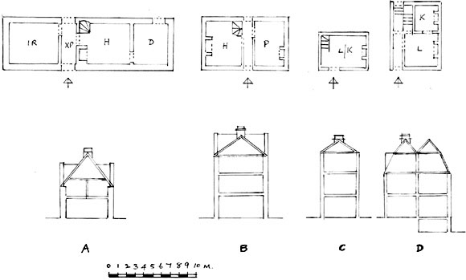
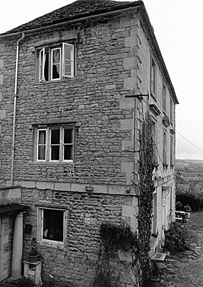

The
16th and 17th Century plan types identified in Batheaston derive from
medieval plans as do internal arrangements, that is, single pile, one,
two or three units, cross passage (or cross entry), fireplaces against
the passage wall or placed on the gable end, stairs tucked into a fireplace
alcove, one and a half or two and a half storeys high (10). This pattern
seems to have survived in Batheaston until about the mid 18th Century.
Some properties, not surprisingly existing or former farmhouses, derive
from the medieval long house, that is, a three unit house where one unit
(the byre) is for accommodating the farm’s animals. Such houses
are built upon a slope with the byre at the lower end to facilitate drainage
away from the residential end. No certain example of a longhouse has been
identified in Batheaston. The nearest to it is Radford Farmhouse, a three
unit ex-farmhouse in the St. Catherine’s valley, where the room
at the lower end was known to be a dairy, which is usual in our area and
considered to be a domestic rather than agricultural use of the room (R.J.
Brown, 1982,
p. 85). More unusually, Upper Northend Farmhouse, another three unit farmhouse
in the St. Catherine’s valley, has the central room which was known
to have been the dairy. This arrangement, with a hall/kitchen on one side
of the dairy and a parlour on the other, is known in North Avon and South
Gloucestershire and dateable to the early to mid 17th Century (Linda Hall,
1983, p.17).

10. Plans and sections of some Batheaston Houses (ignoring later extensions)
- Single pile (one room deep), three-rooms in a line and cross passage (front and rear doors in line at either end of a passageway which divides the house). This is a former farmhouse of the late 16th Century. The plan is derived from the medieval Somerset longhouse with accommodation for cattle at one end of the building. On 1 1/2 storeys and with a gabled roof.
- Single pile, two-rooms in a line. This is a clothier’s house of the mid to late 17th Century. On three storeys with an attic for storage. The roof is gabled.
- Single pile and of one ground floor room. In this case it is an artisan’s house of the late 18th to early 19th Century. On three storeys with a pitched roof.
- Double pile (two rooms deep). The staircase is in the entrance hall. This is a tradesperson’s house of the mid to late 18th Century. On two storeys with spacious attic rooms under an “M” shaped mansard roof.
Key to the illustration:
H = Hall.
Originally the main living-cooking-sleeping room for the family and servants
of medieval houses and not the vestigial entry area it became in the 18th
Century and as it is today.
The private retiring room for the family away from the crowd, noise and
smell of the hall.
It frequently took the form of an unheated bedchamber. In some cases may
have later become the heated Parlour (P).
L = Living room.
K = Kitchen.
D = Dairy
XP = Cross passage.
As distinct from cross entry where the front and rear doors are in opposition
without a passage.
By the later 18th Century, with the development of the “M” shaped roof (10D), which made it possible to span greater spaces, the double pile plan became more common in Batheaston. At the same time, the old cross entry pattern gave way to the fashionable symmetrical and classically inspired designs, where, no doubt, the influence of Bath was important (John Wood the Elder was a Batheaston resident for a period). Even so, most of the properties surveyed conforming to these new ideas were not purpose built but adaptations of existing structures. Thus many of the High Street houses were converted from single pile to double pile by extending backwards, or even, in some cases, forward, while some gentry village houses merely acquired a new façade (11).

11. A classical mid 18th Century façade on a late 17th Century house